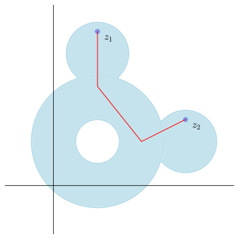

Recall that the modulus \(\abs{z-w}\) of the difference of two complex numbers \(z\) and \(w\) is precisely the distance \(d(z,w)\) between \(z\) and \(w\text{,}\) considered as points in \(\R^2\text{.}\) As a result of Theorem 1.2.7, this distance function \(d(z,w)=\abs{z-w}\) satisfies the following important properties:
Positivity.
\(d(z,w)\geq 0\) for all \(z,w\in \C\text{,}\) and \(d(z,w)=0\) if and only if \(z=w\text{;}\)
Triangle inequality.
\(d(z,w)+d(w,u)\leq d(z,u)\) for all \(z,w,u\in \C\text{.}\)
A set together with a binary function \(d\) satisfying properties (i)-(ii) is called a metric space. We can use the distance function of a metric space to define what turns out to be a useful and natural family \(\mathcal{U}\) of subsets, called the open sets. We illustrate this definition below in the special case of \(\C\) and \(d(z,w)=\abs{z-w}\text{.}\) More generally, a topological space is a set \(X\) together with a set \(\mathcal{U}\) of subsets of \(X\) that satisfy certain axioms. It is easy to show that the collection of sets \(\mathcal{U}\) we define for \(\C\) below satisfies these axioms, making \(\C\) together with \(d\)
SubsectionOpen and closed sets
Definition1.4.1.Open and closed discs.
Given \(z,w\in \C\text{,}\) the distance between \(z\) and \(w\text{,}\) denoted \(d(z,w)\text{,}\) is defined as \(d(z,w)=\abs{z-w}\text{.}\)
Given \(z_0\in \C\) and \(r\leq 0\) the open disc of radius \(r\) centered at \(z_0\text{,}\) denoted \(B_r(z_0)\text{,}\) is defined as
A set \(U\subseteq \C\) is open if for all \(z\in U\) there is an \(r > 0\) such that \(B_{r}(z)\subseteq U\text{.}\) In plain English, a set is open if whenever it contains an element \(z\text{,}\) it contains an entire open disc centered at \(z\text{.}\)
Example1.4.4.Open sets.
Show that the following sets are open in \(\C\text{.}\)
\(B_r(z_0)\) where \(z_0\in \C\) and \(r> 0\text{.}\)
Suppose \(w\in B_r(z)\text{,}\) and let \(s=d(w,z)=\abs{w-z}\text{.}\) By definition we have \(s< r\) and hence \(r'=r-s > 0\text{.}\) We claim that \(B_{r'}(w)\subseteq B_r(z)\text{,}\) and hence that \(B_r(w)\) is open. Indeed, given any \(u\in B_{r'}(w)\text{,}\) we have
We conclude that \(d(u,z)< r\) and hence that \(u\in B_r(z)\text{,}\) as desired.
Take \(z\in U\) and write \(z=a+bi\text{.}\) We have \(b> 0\) by definition, and it is easy to see that \(B_b(z)\subseteq \HH\text{.}\)
Given \(z\in A\text{,}\) let \(s=d(z,1+i)=\abs{z-(1+i)}\text{,}\) and let \(r=\min\{s-1, 2-s\}\text{.}\) It is easy to see that \(B_{r}(z)\subseteq A\text{.}\)
The set \(A\) in Example 1.4.4 is an example of an open annulus. These types of sets are important enough to warrant their own definition.
Definition1.4.5.Annulus.
Given \(z_0\in \C\) and positive integers \(0< r < s\text{,}\) the set
We know from Theorem 1.4.7 that \(\emptyset\) is open. Since \(\C-\emptyset=\C\) is open, we conclude that \(\emptyset\) is also closed.
The set is not open: if you take any \(w\) on the circle \(C_{r}(z_0)\) of radius \(r\) centered at \(z_0\text{,}\) it is easy to see that any open disc around \(w\) will contain an element whose distance to \(z_0\) is greater than \(r\text{.}\)
and it is not difficult to show that this set is open. Indeed, given \(w\in U\text{,}\) you can show that \(B_{s}(w)\subseteq U\text{,}\) where \(s=d(w,z_0)-r\text{.}\)
The set is neither open nor closed. It is easy to see that \(4i\) is an element of \(A\text{,}\) but not open disc centered at \(4i\) is contained in \(A\text{.}\) Furthermore, the complement of \(A\text{,}\)\(\C-A\) is not open. Indeed, we have \(6i\in \C-A\text{,}\) but every open disc around \(6i\) contains some element of \(A\text{.}\)
Since closed sets are defined as complement of open sets, a little bit of set theory yields the following complementary result to Theorem 1.4.7.
Theorem1.4.10.
The empty set \(\emptyset=\{\}\) is closed, as is the set \(\C\) itself.
Finite union.
Finite unions of closed sets are closed.
Arbitrary intersection.
Arbitrary intersections of closed sets are closed.
You may have noticed in Example 1.4.9 that we paid special attention to what we call the boundaries of the given sets. We will now give a rigorous definition of this notion, and then reformulate open and closed in terms of it.
Definition1.4.11.Boundary.
Let \(Y\) be a subset of \(\C\text{.}\) An element \(z_0\in \C\) is a boundary point of \(Y\) if every open disc \(B_{r}(z_0)\) contains at least one element from \(Y\) and one element from the complement \(\C-Y\text{.}\) The boundary of \(Y\text{,}\) denoted \(\partial Y\text{,}\) is the set of all boundary points of \(Y\text{.}\)
Example1.4.12.Boundary.
Compute the boundary of the given set.
\(\displaystyle \emptyset\)
\(\displaystyle \C\)
\(B_{r}(z_0)\text{,}\) where \(z_0\in \C\) and \(r > 0\text{.}\)
\(\overline{B}_{r}(z_0)\text{,}\) where \(z_0\in \C\) and \(r > 0\text{.}\)
\(\displaystyle \HH=\{z\in \C\colon \Im z> 0\}\)
Solution.
We have \(\partial \emptyset=\emptyset\) since for all \(z_0\) no open ball \(B_\epsilon(z_0)\) can contain elements of \(\emptyset\text{.}\) Indeed, \(\emptyset\) contains no elements!
We have \(\partial \C=\emptyset\text{.}\) Indeed, given any \(z_0\text{,}\) we have \(B_r(z_0)\subseteq \C\) for all \(r> 0\text{,}\) and hence this ball contains nothing but elements of \(\C\text{.}\)
Let \(C_r(z_0)=\{z\in \C\colon \abs{z-z_0}\}\text{,}\) the circle of radius \(r\) centered at \(z_0\text{.}\) We have \(\partial B_r(z_0)=C_r(z_0)\text{.}\) It is clear that every point on \(C_r(z_0)\) is a boundary point of \(B_r(z_0)\text{.}\) It is also easy to see that any \(z\) not lying on \(C_r(z_0)\) is not a boundary point of \(B_r(z_0)\text{.}\)
Similar reasoning as above shows that \(\partial\overline{B}_r(z_0)=C_r(z_0)\text{.}\)
It is easy to see that \(\partial \HH=\{z\in \C\colon \Im z=0\}\text{,}\) the \(x\)-axis.
Theorem1.4.13.Open and closed via boundaries.
Let \(Y\) be a nonempty subset of \(\C\text{.}\)
\(Y\) is open if and only if it does not contain any of its boundary points.
\(Y\) is closed if and only if it contains all of its boundary points.
SubsectionConnected sets
The topological notion of a connected set will also play an important role in our theory. Below we give two separate notions of connected sets, connected and polygonally connected, that turn out to be equivalent for open sets. Both notions have their advantages, depending on the context. Although polygonally connectedness is admittedly more intuitive than connectedness, you can rest assured that there are many situations where the more abstract connectedness definition comes to our aid. This is why we provide both here.
Definition1.4.14.Connected set.
A set \(Y\subseteq \C\) is connected if whenever we have open sets \(U_1\) and \(U_2\) satisfying \(Y\subseteq U_1\cup U_2\) and \(Y\cap U_1\cap U_2=\emptyset\text{,}\) then either \(Y\subseteq U_1\) or \(Y\subseteq U_2\text{.}\)
Definition1.4.15.Polygonally connected.
A nonempty set \(Y\subseteq \C\) is polygonally connected if, given any points \(z_1, z_2\in Y\) there is a polygonal path \(C\) lying within \(Y\) that begins at \(z_1\) and ends at \(z_2\text{.}\)

Figure1.4.16.A polygonally connected set
Theorem1.4.17.Connected sets.
Let \(Y\subseteq \C\) be a nonempty set.
If \(Y\) is polygonally connected, then it is connected.
If \(Y\) is open, then \(Y\) is polygonally connected if and only if \(Y\) is connected.
SubsectionPoint at infinity
In calculus we introduce formal notation involving \(\infty\) to give us succinct ways of describe values of variables or functions that get arbitrarily large: \(x\to \infty\) of \(f(x)\to -\infty\text{.}\) We will do the same with complex analysis, and even go one step further: namely, by officially adding a formal element \(\infty\) to create the extended complex plane, and extending our notion of open sets to this extended set \(\C^*\text{.}\)
Definition1.4.18.Extended complex plane.
The extended complex plane is the set \(\C^*=\C\cup \{\infty\}\text{,}\) where \(\infty\) is treated as a formal element.
Given \(R> 0\text{,}\) the set \(B_R(\infty)\) defined as
is called an open disc centered at \(\infty\text{.}\) We extend our notion of open sets on \(\C\) to \(\C^*\) by declaring that a set \(U^*\) containing \(\infty\) is open if and only if \(U=U^*\cap \C\) is open in \(\C\) and \(U^*\) contains \(B_R(\infty)\) for some \(R> 0\text{.}\)
We can make sense of our new topological space \(\C^*\) using the stereographic projection.
Definition1.4.19.Stereographic projection.
Let \(S^2=\{P\in \R^3\colon \norm{P}=1\}\text{,}\) and let \(N=(0,0,1)\in S^2\text{.}\) Identify \(\C\) as the \(xy\)-plane lying in \(\R^3\text{.}\) The stereographic projection is the map
given \(P\in S^2-\{N\}\text{,}\)\(\phi(P)=a+bi\text{,}\) where \(Q=(a,b,0)\) is the intersection of the unique line passing through \(N\) and \(P\) with the \(xy\)-plane.